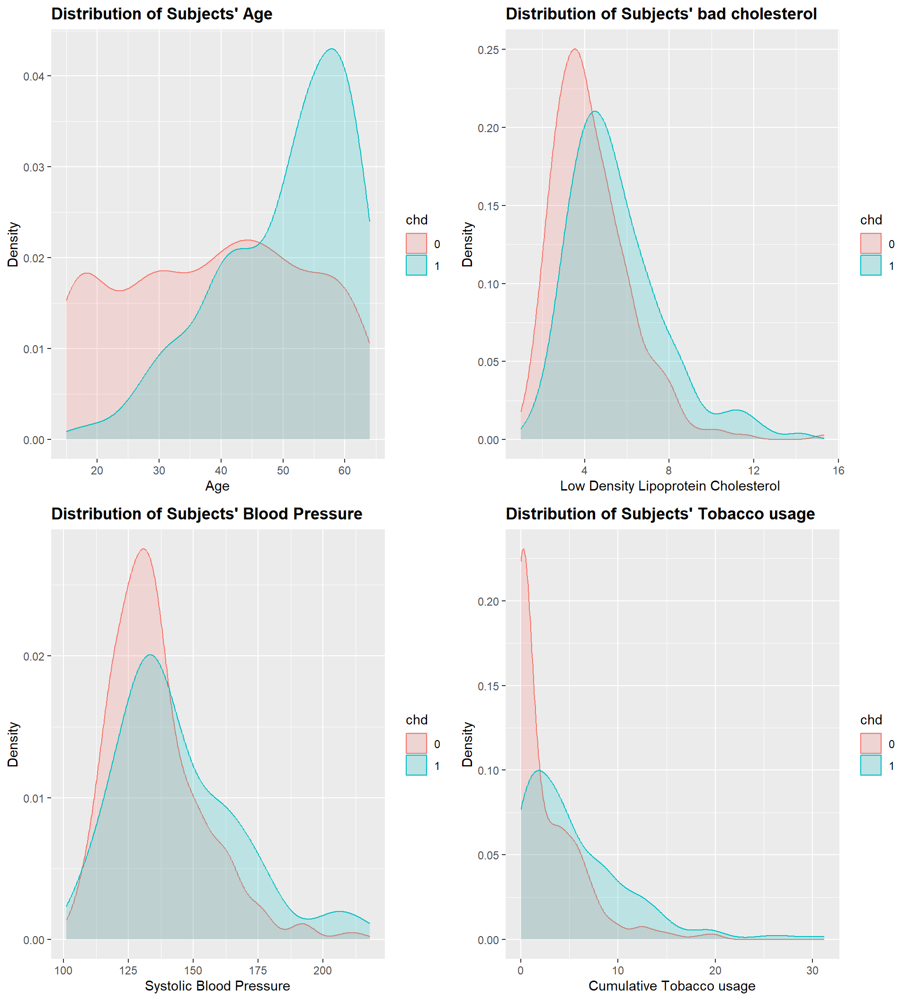
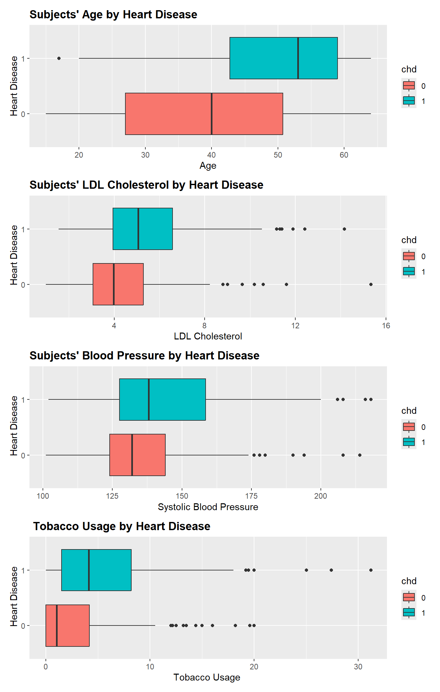
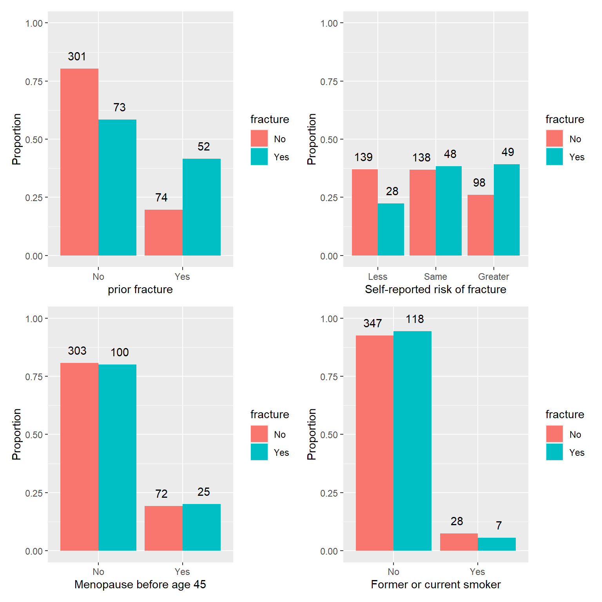

Reading Christopher R. Bilder and Thomas M. Loughin. Analysis of Categorical Data with R. CRC Press. 2015. - CH 2.1, 2.2.1-2.2.4 (page 61- 94) - Ch. 2.2.5 – 2.2.8, 2.3 (page 94)
In CH1, we first focused on estimating \pi
Then, \pi_1 and \pi_2 and independent groups
Briefly talked about matched pair case where \pi_1 and \pi_2 are dependent.
Now we start talking about many different possible probabilities of success to estimate and perform inference upon.
Use odd to estimate parameters and use odd ratio to evaluate the estimated parameters.
Generalized linear models (GLM)
GLMs have three different parts (see page 121:
Random Component:
Y, for logistic regression, Y has a Bernoulli distribution
Systematic Component:
This specifies a linear combination of the regression parameters with features, and this part is referred to as the linear predictor
\beta_0 + \beta_1x_1 + .... + \beta_px_p
LINK FUNCTION:
Specifies how the expected value of the random componentE[Y] is linked to the sysmatic component.
Unfortunately, there are only a few simple cases where these parameter estimates have closed-form solutions; i.e., we cannot generally write out the parameter estimates in terms of the observed data like we could for the single probability estimate \pi in Section 1.1.2.
Instead, we use iterative numerical procedures, as described in Appendix B.3.2, to successively find estimates of the regression parameters that increase the log-likelihood function
Call:
glm(formula = good ~ distance, family = binomial(link = logit),
data = placekick)
Deviance Residuals:
Min 1Q Median 3Q Max
-2.7441 0.2425 0.2425 0.3801 1.6092
Coefficients:
Estimate Std. Error z value Pr(>|z|)
(Intercept) 5.812080 0.326277 17.81 <2e-16 ***
distance -0.115027 0.008339 -13.79 <2e-16 ***
---
Signif. codes: 0 '***' 0.001 '**' 0.01 '*' 0.05 '.' 0.1 ' ' 1
(Dispersion parameter for binomial family taken to be 1)
Null deviance: 1013.43 on 1424 degrees of freedom
Residual deviance: 775.75 on 1423 degrees of freedom
AIC: 779.75
Number of Fisher Scoring iterations: 6
page74
Hypothesis tests for regression parameters
(see page 56)
Wald test, which involves calculating \Z_0 and using standard normal distribution often suffer from bias.
\Lambda = \frac{\text{ML under }H_0 }{\text{ML under }H_A}
Transformed LRT
-2\text{log}{(\Lambda)} \approx \chi^2
Deviance
deviance refers to the amount that a particular model deviates from another model as measured by -2\text{log}(\Lambda).
Saturated model
saturated model, which has a different coefficent for each data point, leading to perfect prediction, a likelihood of one, and a log likelihood of zero.
Null deviance
The null deviance measures the performance of the worst model using only an intercept, providing a benchmark.
Therefore, how much better (smaller) our residual deviance is compared to the null deviance and how close it is to zero is a measure of model fit.
Sometimes people will compute an R^2 for logistic regression using 1-\frac{\text{Residual Deviance}}{\text{Null Deviance}} since it is bounded between 0 (residual deviance = null deviance) and 1 (residual deviance = saturated model = 0).
Note that we can compute deviance of two separate models by substracting the null model residual deviance and the alternative model residual deviance from separate logistic regression fits.
See page 81 for more information
mod.fit2 <-glm(formula = good ~ change + distance , family =binomial(link = logit), data = placekick)#one at a time testAnova(mod.fit2, test ="LR")
Analysis of Deviance Table (Type II tests)
Response: good
LR Chisq Df Pr(>Chisq)
change 5.246 1 0.022 *
distance 218.650 1 <2e-16 ***
---
Signif. codes: 0 '***' 0.001 '**' 0.01 '*' 0.05 '.' 0.1 ' ' 1
anova(mod.fit, mod.fit2, test ="LR")
Analysis of Deviance Table
Model 1: good ~ distance
Model 2: good ~ change + distance
Resid. Df Resid. Dev Df Deviance Pr(>Chi)
1 1423 775.75
2 1422 770.50 1 5.2455 0.022 *
---
Signif. codes: 0 '***' 0.001 '**' 0.01 '*' 0.05 '.' 0.1 ' ' 1
\hat{\text{OR}} = \text{exp}(c\hat{\beta}_1) - So, it will have estimated variance. - As you have guessed by now, Wald CI does not work well when sample size small.
use transformed LRT statistic.
#finds LR confidence intervalmod.fit
Call: glm(formula = good ~ distance, family = binomial(link = logit),
data = placekick)
Coefficients:
(Intercept) distance
5.812 -0.115
Degrees of Freedom: 1424 Total (i.e. Null); 1423 Residual
Null Deviance: 1013
Residual Deviance: 775.7 AIC: 779.7
10-yard decrease in distance increases the odds of a successful placekick.
97.5 % 2.5 %
2.693147 3.736478
[1] 2.682701 3.719946
Has similar interval due to large sample size
Example of magin coin
You can convert log odd to probability
Your aunt offers a service in which she weights coins to make them unfair.
You give her a coin and tell her how much you want the log-odds to change.
She returns the modified coin.
For each of the following orders, use your function to compute the resulting probability of heads:
fair coin, increase log-odds by 1.
fair coin, increase log-odds by 2.
fair coin, increase log-odds by 10.
fair coin, decrease log-odds by 1.
fair coin, decrease log-odds by 2.
fair coin, decrease log-odds by 10.
Write an R function that computes the probability of heads, given log-odds.
[1] 0.5
log_odds
probability
10
1.000
2
0.881
1
0.731
0
0.500
-1
0.269
-2
0.119
-10
0.000
In you own words, describe how changes in log-odds translate to changes in probability
You can see in this plot, As log-odds increase, the probability of success increases relative to the probability of failure, and it approaches one. As log-odds decrease probability of success decrease and converges to zero.
If you get log-odds values that are very very small like -10 the probability of success is almost zero, and if you get log-odds values that are very big like 10 or the probability of success is almost one.
The relationship between log-odd and probability is not linear, but of s-curve type, and log odds ratios ranging from -5 to +5 create probabilities that range from just above 0 to very close to 1.
Case Study: South African Heart Disease
Background
Target: Probability of getting coronary heart disease, chd
Feature:
High blood pressure, high LDL cholesterol, diabetes, smoking, secondhand smoke exposure, obesity, an unhealthy diet, and physical inactivity are among the leading risk factors for heart disease.
Data Source: Source: Rousseauw, J., du Plessis, J., Benade, A., Jordaan, P., Kotze, J. and Ferreira, J. (1983). Coronary risk factor screening in three rural communities, South African Medical Journal 64: 430–436.
Data Description
sbp: systolic blood pressure
tobacco: cumulative tobacco use (kg)
ldl: low density lipoprotein cholesterol (‘bad’ cholestrol)
adiposity: Body adiposity index determines body fat percentage(calculated as (HC / (HM)1.5) - 18, where HC = Hip Circumference in Centimetres and HM = Height in meters)
famhist: family history of heart disease
typea: A personality type that could raise one’s chances of developing coronary heart disease
obesity: Body Mass Index (BMI) (kg/m^2)
alcohol: current alcohol consumption
age: age at onset
chd: coronary heart disease (target)
Task
Using blood pressure, smoking, cholesterol,and age.
Load the data and answer the following questions:
What are the number of variables and number of observations?
What is the type of each variable? Do we need to change it?
Are there any missing values (in each of the variables)?
Are there any abnormal values in each of the variables in the raw data?
tobacco
ldl
sbp
age
chd
obesity
12.00
5.73
160
52
1
25.30
0.01
4.41
144
63
1
28.87
0.08
3.48
118
46
0
29.14
7.50
6.41
170
58
1
31.99
13.60
3.50
134
49
1
25.99
6.20
6.47
132
45
0
30.77
EDA
Univariate analysis
The response (or dependent) variable of interest, Heart disease, is a binary variable taking the type factor.
Use a bar chart to explore the distribution of the response variable (chd). What do you learn?
Heart disease
N
Proportion
0
302
0.65
1
160
0.35
For metric variables, a density plot or histogram allows us to determine the shape of the distribution and look for outliers.
Use a density plot to explore the distribution of explanatory variables. What do you discover?

Bivariate Analysis
Prior to moving on to the fully specified model, it is advisable to first examine the simple associations between the response and each explanatory variable.
Box plots are useful for exploring the association between a categorical variable and a variable measured on an interval scale.
Use a boxplot to examine how the explanatory variables are correlated with the response variable (chd)?
The coord_flip() function is used to keep the dependent variable on the y-axis.

Use the convenient summary_factorlist() function from the finalfit package to tabulate data.
Dependent: chd
0
1
p
ldl
Mean (SD)
4.3 (1.9)
5.5 (2.2)
<0.001
sbp
Mean (SD)
135.5 (18.0)
143.7 (23.7)
<0.001
tobacco
Mean (SD)
2.6 (3.6)
5.5 (5.6)
<0.001
age
Mean (SD)
38.9 (14.9)
50.3 (10.6)
<0.001
According to the plots and the tables, What variable is most important for explaining heart disease? How is that variable correlated with heart disease?
MRL
Is the linear probability model an appropriate choice to study the relationship between heart disease and risk factors?
Estimate the following linear probability model and interpret the model results.
Do the raw coefficient estimates directionally make sense?
Call:
glm(formula = chd ~ ldl + sbp + tobacco + age, family = binomial(link = logit),
data = df)
Deviance Residuals:
Min 1Q Median 3Q Max
-1.9457 -0.8595 -0.4999 1.0238 2.3906
Coefficients:
Estimate Std. Error z value Pr(>|z|)
(Intercept) -4.535524 0.781360 -5.805 6.45e-09 ***
ldl 0.185131 0.054121 3.421 0.000625 ***
sbp 0.004307 0.005394 0.798 0.424623
tobacco 0.075982 0.025616 2.966 0.003016 **
age 0.046264 0.009852 4.696 2.66e-06 ***
---
Signif. codes: 0 '***' 0.001 '**' 0.01 '*' 0.05 '.' 0.1 ' ' 1
(Dispersion parameter for binomial family taken to be 1)
Null deviance: 596.11 on 461 degrees of freedom
Residual deviance: 502.19 on 457 degrees of freedom
AIC: 512.19
Number of Fisher Scoring iterations: 4
Again, all of the explanatory variables except blood pressure are statistically significant and positively correlated with the probability of heart disease, same as the linear probability model.
The odd of a success change by exp(c\beta_k) times for every c-unit increase in x
Compute and interpret the estimated odds ratio for a 10-unit increase in each explanatory variable.
# Replace with your coderound(exp(10*coef(mod.logit.h0)),2)
(Intercept) ldl sbp tobacco age
0.00 6.37 1.04 2.14 1.59
The estimated odds of success or having a heart disease change by 6.37 times for every 10-unit increase in LDL or ‘bad’ cholesterol.
Interestingly, the odds of having a heart disease is almost 1 for every 10-unit increase in blood pressure, which means an increase in blood pressure doesn’t change the odds of having heart disease, and it’s consistent with its insignificant coefficient.
Hypothesis Test
Using the likelihood ratio test (LRT) for hypothesis testing is a common practice in a logistic regression model.
Use LRT to test whether (obesity) is associated with heart disease.
H_0: \beta_{obesity} = 0
H_a: \beta_{obesity} \ne 0
Use both Anova() or anova() functions.
#mod.logit.ha <- # uncomment and replace with your codemod.logit.ha <-glm(chd ~ ldl + sbp +tobacco + age + obesity, family =binomial(link = logit), data = df)#anova()anova(mod.logit.h0, mod.logit.ha, test ="Chisq")
Analysis of Deviance Table
Model 1: chd ~ ldl + sbp + tobacco + age
Model 2: chd ~ ldl + sbp + tobacco + age + obesity
Resid. Df Resid. Dev Df Deviance Pr(>Chi)
1 457 502.19
2 456 501.07 1 1.1191 0.2901
deviance refers to the amount that a particular model deviates from another model as measured by -2\text{log}(\Lambda).
What are the null deviance and residual deviance in the model summary?
For null and residual deviance, the alternative model we use is the saturated model, which has a different coefficent for each data point, leading to perfect prediction, a likelihood of one, and a log likelihood of zero.
The null deviance measures the performance of the worst model using only an intercept, providing a benchmark.
Therefore, how much better (smaller) our residual deviance is compared to the null deviance and how close it is to zero is a measure of model fit.
Sometimes people will compute an R^2 for logistic regression using 1-\frac{\text{Residual Deviance}}{\text{Null Deviance}} since it is bounded between 0 (residual deviance = null deviance) and 1 (residual deviance = saturated model = 0).
Note that we can compute deviance of two separate models by substracting the null model residual deviance and the alternative model residual deviance from separate logistic regression fits. (Why is this?)
Using deviance, test whether (obesity) is associated with heart disease.
H_0: \beta_{obesity} = 0
H_a: \beta_{obesity} \ne 0
We get a p-value of 0.29, the same as what we got from both anova() and Anova() functions, and again we fail to reject the null hypothesis that obesity is not correlated with heart disease given this data set.
With 95% confidence, the odds of having a heart disease change between 2.20 to 18.4 times for every 10-unit increase in LDL or ‘bad’ cholesterol.
What is the main concern with Wald CI?
Wald confidence interval has a true confidence level close to the 95% only when we have large samples. When the sample size is not large, profile LR confidence intervals generally perform better.
Now calculate the profile likelihood ratio (LR) confidence interval using the confint function.
# Replace with your codebeta_ci <-confint(mod.logit.h0)
For an average value of all explanatory variables, compute the Confidence Interval for the Probability of Success given the formula above
pi.hat lower upper
1 0.3089 0.2925 0.3259
Final Visualization
Using both the linear probability and logistic regression models, plot the estimated probability of heart disease for different values of cholesterol, holding other variables constant at their average level.
Discuss which one can better explain this relationship.
Final Report
Display both estimated linear and logistic models in a regression table. Is there any significant difference between their results?
In both models, all the coefficients except blood pressure are statistically significant and positively associated with the probability of having heart disease. Also, LDL is the most correlated variable with the probability of heart disease in both models.
Case Study: osteoporosis
Background
In osteoporosis, bones become weak and brittle, so weak that even bending over or coughing can fracture them. Hip, wrist, and spine fractures are the most common osteoporosis-related fractures.
All races of people are at risk for osteoporosis.
However, white and Asian women, particularly those that are post menopause, are at the greatest risk.
A healthy diet, weight-bearing exercises, and medications can strengthen weak bones or prevent their loss. (Mayo Clinic)
Here, Our goal is description of the data:
How factors such as age and weight are related to the fracture rates among older women?
This sample comes from the Global Longitudinal Study of Osteoporosis in Women (GLOW).
The data set includes information on 500 subjects enrolled in this study.
Install and load the aplore3 library to use the glow500 dataset and understand the structure dataset.
We summarize some of the variables that we will use:
PRIORFRAC: History of prior fracture
AGE: Age at enrollment
WEIGHT: Weight at enrollment (Kilograms)
HEIGHT: Height at enrollment (Centimeters)
BMI: Body mass index (kg/m^2)
PREMENO: Menopause before age 45
FRACTURE: Any fracture in first year of follow up (target)
Age has a higher age in women with fractures than women without fractures. BMI distributions have almost the same mean and same variance in both groups with and without fracture, so probably BMI is not a useful variable to classify these two groups

From these box plots, we can see the women who suffered from a fracture are older, but both groups have the same distribution of BMI.
From the plots above, we see that the women with a history of prior fracture, and a high self-reported risk of fracture, have a higher probability of having a fracture in the first year of study. But, smokers and no smokers and women with or without menopause before 45 have the same probability of having a fracture. so smokers and menopause do not help classify these two groups, and we’re not going to use them for modeling
Dependent: fracture
No
Yes
bmi
Mean (SD)
27.5 (6.0)
27.7 (5.9)
age
Mean (SD)
67.5 (8.7)
71.8 (9.1)
priorfrac
No
301 (80.3)
73 (58.4)
Yes
74 (19.7)
52 (41.6)
premeno
No
303 (80.8)
100 (80.0)
Yes
72 (19.2)
25 (20.0)
raterisk
Less
139 (37.1)
28 (22.4)
Same
138 (36.8)
48 (38.4)
Greater
98 (26.1)
49 (39.2)
smoke
No
347 (92.5)
118 (94.4)
Yes
28 (7.5)
7 (5.6)
GLM
simple model
Call:
glm(formula = fracture ~ bmi + age, family = binomial(link = logit),
data = df)
Deviance Residuals:
Min 1Q Median 3Q Max
-1.21426 -0.77408 -0.62995 -0.07905 2.02854
Coefficients:
Estimate Std. Error z value Pr(>|z|)
(Intercept) -5.83441 1.10792 -5.266 1.39e-07 ***
bmi 0.02692 0.01817 1.482 0.138
age 0.05736 0.01211 4.735 2.20e-06 ***
---
Signif. codes: 0 '***' 0.001 '**' 0.01 '*' 0.05 '.' 0.1 ' ' 1
(Dispersion parameter for binomial family taken to be 1)
Null deviance: 562.34 on 499 degrees of freedom
Residual deviance: 538.89 on 497 degrees of freedom
AIC: 544.89
Number of Fisher Scoring iterations: 4